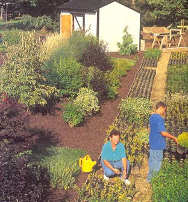
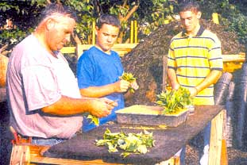
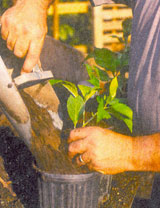
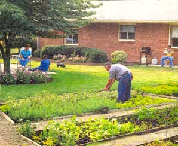

How to start a backyard nursery.
Growing plants for retail or wholesale is an interesting and fun way to earn money while involving the whole family. You don't need much land (our backyard nursery is only 1/20 of an acre), you can grow thousands of plants at a time, and you earn several thousand dollars a year... working right at home
Starting a nursery in your backyard is probably easier than you think. When most people think of a plant nursery they visualize huge greenhouses, tractors and other expensive equipment. The fact is, as a backyard grower you don't need any of those things to get started. All you need is a small area to start growing some plants and a little bit of information on landscape plant propagation. Thankfully, there are many simple and easy propagation techniques that are easy to learn and work really well.
Seeds
One of the local wholesale nursery owners in our area has been buying our plants for years. She grows thousands of her own plants, but at times local demand outweighs her supply, so she buys from us, marks up the price a little, and takes care of her customers. Usually she goes for the white, pink and Chinese dogwoods we grow.
As it turns out, white and Chinese dogwoods are quite easy to grow from seed, and you should plant them as soon as they're ripe and start falling from the trees in September. Collect the seeds and soak them in water for about a week, then squeeze them between your fingers to separate the pulp. Put the seeds in a pail filled with water so that they sink to the bottom, leaving the pulp on top to be washed away when the water starts to overflow. Afterward, fill a kitchen blender halfway with water and slowly add the seeds, allowing them to churn for a minute or so (run the blender at a slow speed, just fast enough to keep the mixture turning). This process nicks the hard outer shell of the seeds, allowing water and oxygen to penetrate the husks and trigger the germination process.
Dry the seeds and immediately sow them on top of a bed of weed-free topsoil. Cover the seeds with approximately 3/16 inches of soil (not too deep!). Then, cover the bed with hardware cloth or screen to keep birds and small animals from eating the seeds. At the first sign of germination in the spring, remove the screen.
Interestingly, seeds collected from a pink dogwood are likely to flower white, and most of the time the accepted method for producing pink dogwoods involves grafting a bud or a small twig from a pink tree onto a white dogwood seedling. The introduction of "intermittent mist," however, has made it possible to root pink dogwood cuttings on their own. Intermittent mist is an automatic watering system that applies a fine spray of water to cuttings every few minutes during daylight hours. As an example, we just planted several thousand cuttings last week and have them under intermittent mist. They receive a 12-second spray of water every ten minutes starting at 9:00 a.m. and ending at 7:30 p.m. Some of them will be rooted in two weeks; almost all of them will be rooted in six weeks. It's a fairly simple system, but it requires a timer, a transformer, and an electric solenoid valve to control the watering cycle. The investment can be around $360 if you buy a system, or about $225 if you build your own. This is something you might want to consider once your nursery is making a fair profit. In the meantime there are many other plants with inexpensive propagation techniques that you can use.
Flowering shrubs are very popular and are quite easy to propagate. When we have a retail sale, any plant that has a bloom on it sells immediately. We grow forsythia, weigela, potentilla, purple sandcherry, rose of Sharon, viburnums, flowering almond, hydrangea and spirea by using an easy growing technique called "layering."
Layering is a simple process often used to propagate flowering shrubs. All you do is dig a little hole next to the shrub that you would like to propagate and pull a branch from the shrub into the hole, gently bending it in a "U" shape so that the bottom curve of the "U" is under ground. Cover the hole completely with soil, packing it tightly so that the branch doesn't pop out. You're left with one end of the branch still attached to the parent plant and the other end sticking up out of the ground. The plant will root from the middle of the buried branch.
According to local lore, wholesale growers would plant hundreds of plants in large square "layering blocks." Each spring they would layer every branch on every plant, then come back the following spring, remove the new layers, and line them out in the field to grow. After the layers were removed, the parent plants looked like stumps. They were, however, living, viable plants that would put on fresh new growth for layering the next year. These growers always had two layering blocks - one ready to be layered and the other to be harvested.
Layering is a foolproof technique because the cutting you root is still attached to the parent plant, which prevents it from failing as easily as cuttings that have been completely removed. You can increase the odds of layered plants taking root by "wounding" the plant at the point that is buried (to "wound" a plant, simply scrape the bark off just one side of the stem) and applying a rooting compound to the wound. Rooting compounds are available at most full-service garden centers and through many mail-order catalogs. They come in both powder and liquid formula and in varying strengths, for softwood or hardwood cuttings. I prefer the liquid formula because you control the strength of the solution by adding water yourself.
By fall the layered plants should be rooted and can be transplanted to your nursery once they are dormant for the winter. They are not dormant until after they've undergone a hard freeze.
Evergreens are great plants (and great sellers!) that are grown from cuttings. The easiest ones to grow are taxus, juniper and arborvitae. We skip the taxus evergreens because they are slow to mature. We like to grow plants that we can turn over quickly, but we do grow and sell thousands of arborvitae and juniper evergreens. We've found the best way to grow them is in a propagation box.
Build a propagation box using 2x8s just like you would if you were building a kid's sandbox - a square frame with no bottom or top. Place the box in an area that receives about 50% sunlight and remove all vegetation from the area inside the frame before filling it with coarse sand. Coarse sand is the type used when mixing concrete (unlike fine-grained masonry sand) because the particles are larger and provide better drainage in the propagation box. Fill the box completely, leaving some extra on top in case the sand settles. When you're ready to start sticking cuttings in the box, level the sand and strike off the excess.
Keep in mind that this type of propagation is a technique to be used in the autumn. Some nurseries even wait until after Thanksgiving to plant, but we have experienced success as early as September.
To make evergreen cuttings, all you do is clip off the tips of the branches, making each cutting about six inches long. Then, remove the needles from the bottom two-thirds of the cuttings, dip them in a rooting compound and, using a putty knife and a straight edge, make a slice in the sand the width of the propagation bed. Now you can stick the branches in the opening one inch deep and about one inch apart from each other. Insert the next row about two inches from the first. Immediately after planting, water thoroughly so that the sand will settle around the cuttings and eliminate any air pockets.
After you get the plants in the ground, water them a couple of times a week until the weather turns cold. Once you've experienced a hard freeze, the cuttings become dormant until spring and will need very little care. Just water them when you experience warm or dry weather. It's a slow technique, but it works. When spring rolls around you should start watering on a regular basis, and by the next fall the cuttings should be rooted and can be transplanted to your nursery.
Here in the far northeastern corner of Ohio we have more than 100 nurseries, ranging in size from our 1/20 of an acre to much larger ones measuring 600 acres. Many of these nurseries were called "lunchbox" nurseries, a term that dates from the early 1900s when employees of one large wholesale nursery would smuggle cuttings home in their lunch boxes to start their own backyard nurseries. Many of these startups grew into very productive and profitable enterprises.
When you're ready to sell the plants you grow, there are many different ways to go about it. We grow most of our plants in small containers and sell them for $4 each. It costs us about 23 cents to produce one of these little plants, and most of that cost is the plastic container-the cost of the plant is next to nothing. We spend $10 on sand, $20 on rooting compound, and can do 7,000 cuttings or more with these materials, which brings the cost per cutting to less than a penny. As close as I can figure, our cost for the potting soil is about 5 cents for a two-quart container. The cost of the plastic container is around 16 cents. A small ad in the local paper brings in customers like crazy and, because we're lucky enough to live in a community that allows us to sell directly from our home, we sell both wholesale and retail from our backyard nursery.
If you can't do retail sales from home, you should still be able to establish a wholesale business. Large wholesale nurseries spend thousands of dollars each year buying plants they need. Some of them buy rooted cuttings while others buy landscape-size plants. Whatever the case, they will buy from you if you offer good-quality plants at fair prices.
You could even have a backyard nursery specializing only in rooted cuttings. A four-inch cutting with roots has value on the market, and there are wholesale buyers who purchase thousands of them at a time. Rooted cuttings sell for as little as 35 cents or as much as $1.25, depending on the variety. If you grow the plants for one year after they are rooted you can sell them wholesale as one-a-year-transplants, which increases the price to $1.50 or more. There is a market for just about any size plant you choose to grow - and the market is larger than you could ever imagine.
I have a friend who roots and sells grapevines as one- and two-year-old plants. At his 100-acre nursery they make over 500,000 grapevine cuttings each winter, as well as tens of thousands of flowering shrub cuttings every summer. He grows about 100,000 burning bush plants each year and sells them bare root, which is much easier and less expensive than wrapping up a root ball in burlap. After digging the plants up, they shake all the soil from the roots, tie them in bundles of ten, and stack them in an insulated barn until it's time to load them on their customer's truck. The nursery's annual sales exceed 2 million dollars!
That said, the backyard nursery business is not a get-rich-quick business by any means. It takes many years to establish a large nursery. On the other hand, it's a project that you can start with very little money and expand into a thriving home business. In fact, getting started is as easy as deciding what types of plants you would like to grow and acquiring a few that you can use as stock plants to get cuttings from. You'll also need a nursery stock producer and/or vendor license from your state department of agriculture. There is a small fee for the license, but you should contact your county department of commerce for local regulations and information.
Also, you need to know that some plants are patented or are sold under names that are registered trademarks. You cannot grow these plants without entering into an agreement with the person or company that holds the right to them. Don't bother growing these plants; there are plenty of others that you can grow without the hassles. When you go to buy them, just look for a patent number, or "patent pending" on the label or keep an eye out for the trademark symbol (restricted). Lastly, make sure you know both the correct common name and botanical name of the plants you intend to grow. You must have them properly labeled in order to sell them. Good luck and have fun!
Michael J. McGroarty is the author of the booklet The Secret of Growing Landscape Plants from Scratch, a step-by-step guide to starting your own backyard nursery business. Send $3.00 to: McGroarty's Plant Booklet, P O. Box ,338, Perry OH, 44081. You can also learn more propagation techniques and take a cybertour of McGroarty's Backyard Nursery by logging on to http://www.freeplants.com .
For more BARTERS & BOOTSTRAPS stories, PLUS expanded bulletin hoards and article archives, log on to www.motherearthnews.com
|
 |
 |
 |
|
 |
|
|